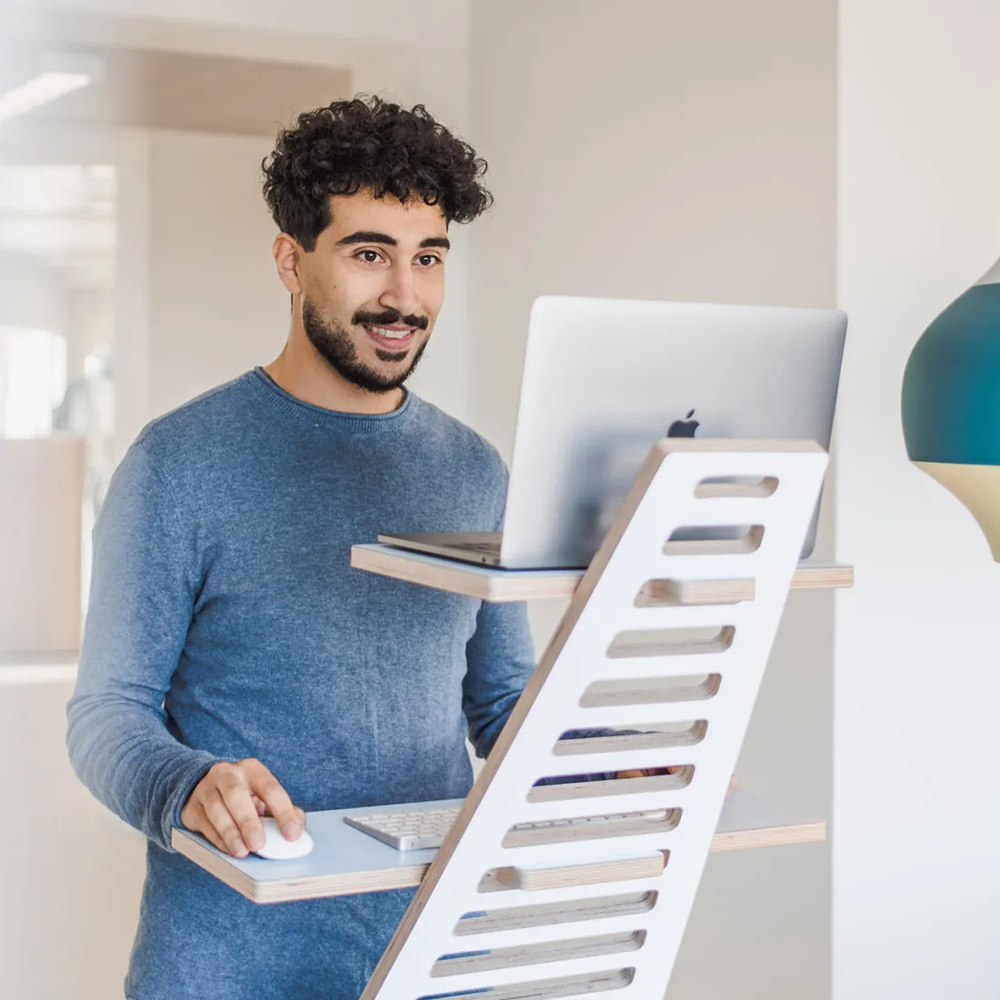
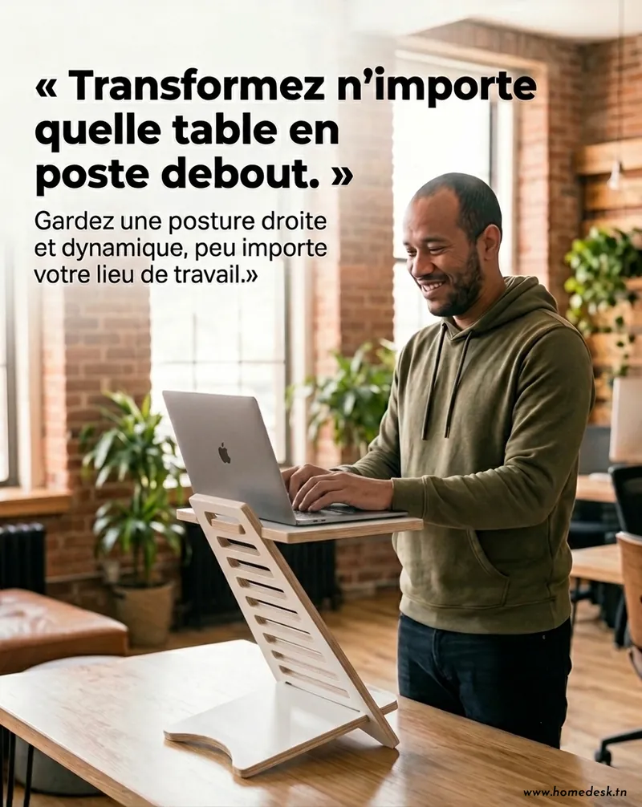
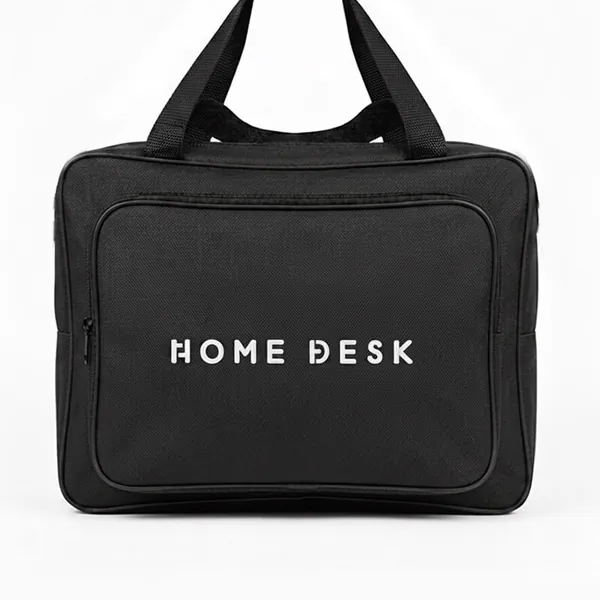
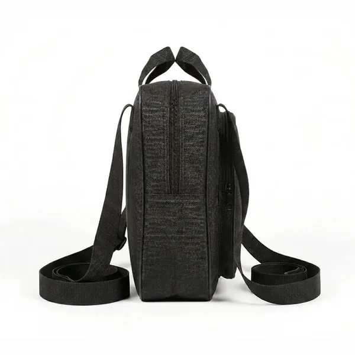
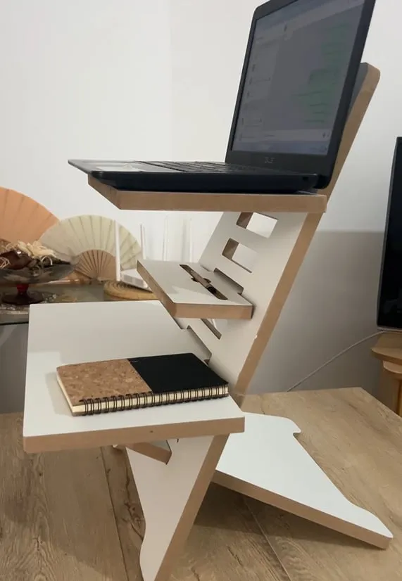
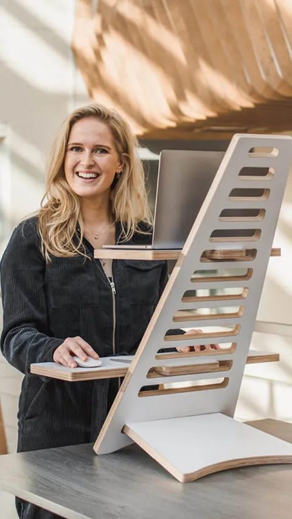
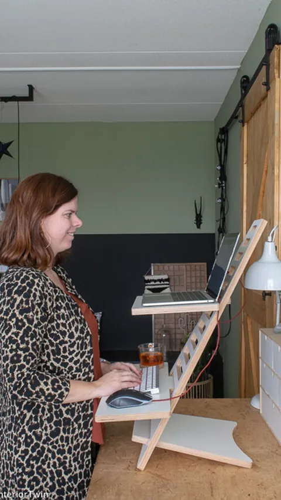
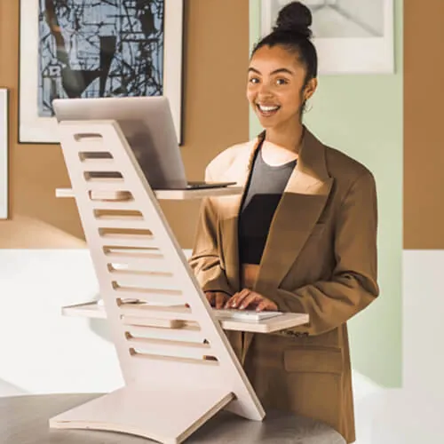
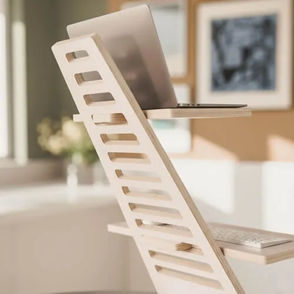
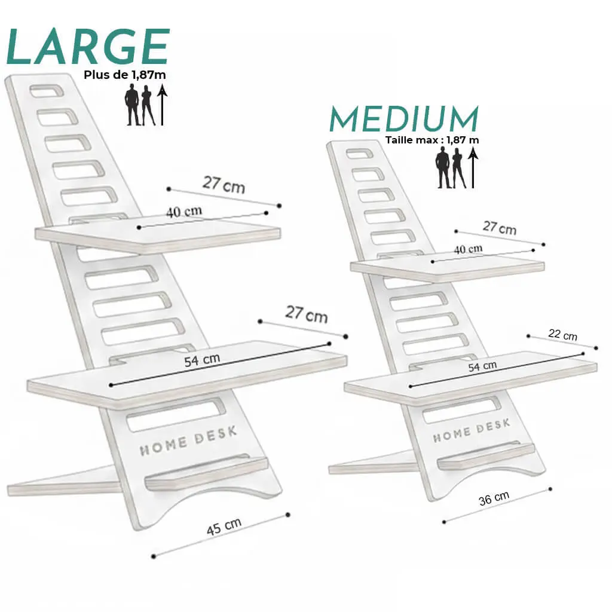

👀
L'écran à hauteur des yeux
Assis comme debout, vous regardez droit devant au lieu de baisser la tête.
Plusieurs niveaux de hauteurHomeDesk se pose sur votre bureau actuel, sans rien changer chez vous. Vous passez d'assis à debout en 5 secondes, l'écran à hauteur des yeux, à la maison comme au bureau.
À partir de 169 DT · Paiement à la livraison · Livraison gratuite

Assis ↔ debout en 5 secTélétravail, bureau, révisions : on passe des heures devant un écran, dans la même posture. Et on le sent en fin de journée.
Le laptop posé à plat vous oblige à baisser la tête pendant des heures.
Votre bureau ne vous laisse qu'un choix : rester assis, même quand l'énergie baisse.
Nuque raide, épaules tendues, envie de s'étirer : rester assis sans bouger fatigue le corps.
Ce n'est pas un manque de volonté.
C'est votre installation qui ne vous laisse pas bouger.
Pas de nouveau meuble, pas de moteur, rien à brancher. Trois étapes, et votre poste change.

Assis comme debout, vous regardez droit devant au lieu de baisser la tête.
Plusieurs niveaux de hauteurChangez de position quand l'énergie baisse, sans interrompre votre travail.
Assis ↔ debout en 5 secondesIl se pose sur n'importe quelle table : rien à racheter, rien à réaménager.
Compact · se pose sur votre bureauIl se démonte et se range dans son sac : maison, bureau, coworking.


Aucun outil, aucun bricolage : les pièces s'emboîtent.
Montage sans outilPas de moteur ni de prise : il fonctionne toujours, partout.
100 % mécanique↩️ 3 jours pour essayer sinon vous êtes remboursé Conditions de remboursement Retournez le produit complet, dans son état d'origine : sans casse, détérioration ni salissure. Après vérification, vous êtes remboursé intégralement sous 7 jours ouvrables.
Faites glisser pour comparer.

 AVANTAPRÈS
AVANTAPRÈS
4,9/5 · +200 professionnels équipés en Tunisie

« Très satisfaite. »
Photo réelle, prise par la cliente chez elle, sans retouche.
« Je l'ai posé sur mon bureau habituel, monté en quelques secondes. Maintenant je peux basculer d'une position à une autre. »
« J'avais peur que ça bouge quand je tape. Au final c'est stable, et l'écran est enfin à la bonne hauteur. Je l'emporte même au coworking dans son sac. »
« Au début, j'ai voulu le testé pendant 3 jours. J'ai fini maintenant par le garder : alterner assis et debout est devenu un réflexe pour moi. »








Non. Votre écran reste en place pendant que vous tapez, assis comme debout. HomeDesk n'a rien d'un support pliant qui tangue : c'est une structure en bois qui pose bien à plat sur votre bureau.

| Fiche technique | Medium | Large |
|---|---|---|
| Pour une taille | jusqu'à 1,87 m | plus de 1,87 m |
| Hauteur | 55 cm | 68 cm |
| Base (L × P) | 36 × 22 cm | 45 × 34 cm |
| Étagère haute | 40 × 27 cm | 40 × 27 cm |
| Étagère clavier | 54 × 22 cm | 54 × 27 cm |
| PC portable | jusqu'à 17" | jusqu'à 17" |
| Étagère tél/tablette | — | ✓ |
| Poids du support | 5 kg | 7 kg |
La bonne taille garde l'écran à hauteur des yeux quand vous êtes debout.

Jusqu'à 1,87 m · hauteur 55 cm

Plus de 1,87 m · hauteur 68 cm
HomeDesk Solo
Prenez-le sans sac et économisez 30 DT : 169 DT (Medium) ou 179 DT (Large).
Commander sans sac →

Vous ne payez qu'à la réception, après avoir vu le produit. Ensuite, vous avez 3 jours pour l'essayer dans vos vraies journées de travail. Pas convaincu ? Vous êtes remboursé.
Medium si vous mesurez jusqu'à 1,87 m (hauteur 55 cm). Large au-delà de 1,87 m (hauteur 68 cm, avec une étagère pour téléphone ou tablette en plus).
HomeDesk est découpé à la CNC dans du MDF stratifié de 18 mm d'épaisseur. Il accueille un PC portable jusqu'à 17 pouces, avec une étagère séparée pour le clavier et la souris.
HomeDesk vous permet d'alterner facilement entre assis et debout et de placer l'écran à hauteur des yeux, ce qui aide à réduire l'inconfort lié à la position assise prolongée. Ce n'est pas un dispositif médical : en cas de douleur persistante, consultez un professionnel de santé.
Vous avez 3 jours pour l'essayer chez vous. Si vous n'êtes pas satisfait, vous êtes remboursé.
Pour être remboursé, retournez le produit complet, avec tous ses accessoires, dans son état d'origine : sans casse, détérioration ni salissure. Après vérification à réception, vous êtes remboursé intégralement sous 7 jours ouvrables.
Non. Les pièces s'assemblent sans outil, en quelques minutes. Ensuite, passer d'assis à debout prend 5 secondes.
Peu : la base de la version Medium mesure 36 × 22 cm. Et comme il se démonte, vous pouvez le ranger dans son sac quand vous n'en avez pas besoin.
Gardez votre bureau, ajoutez la position debout, et changez de posture en 5 secondes. Vous ne payez qu'à la réception.
À partir de 169 DT · Livraison gratuite · 3 jours pour essayer